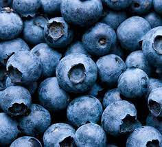
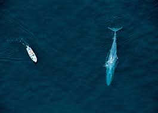

Blue
Interesting facts about the color blue
- Blue is the favored color choice for toothbrushes.
- Blue is often used to decorate offices because research has shown that people are more productive in blue rooms.
- Studies show weight-lifters are able to handle heavier weights in blue gyms.
- Blue was traditionally associated with pain in China.
Click on through for more fun facts about blue!

